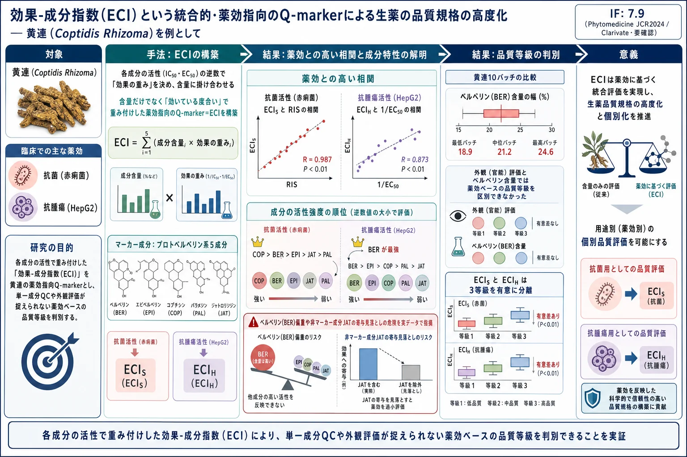
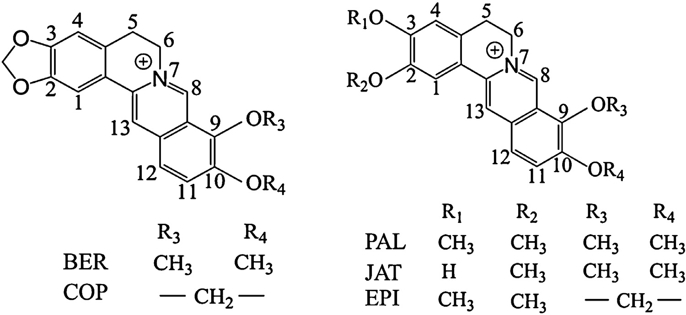
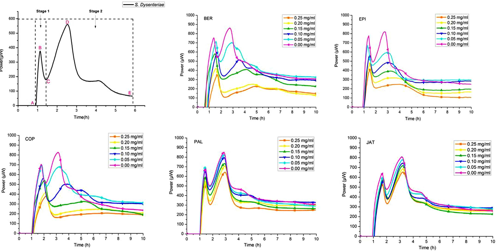
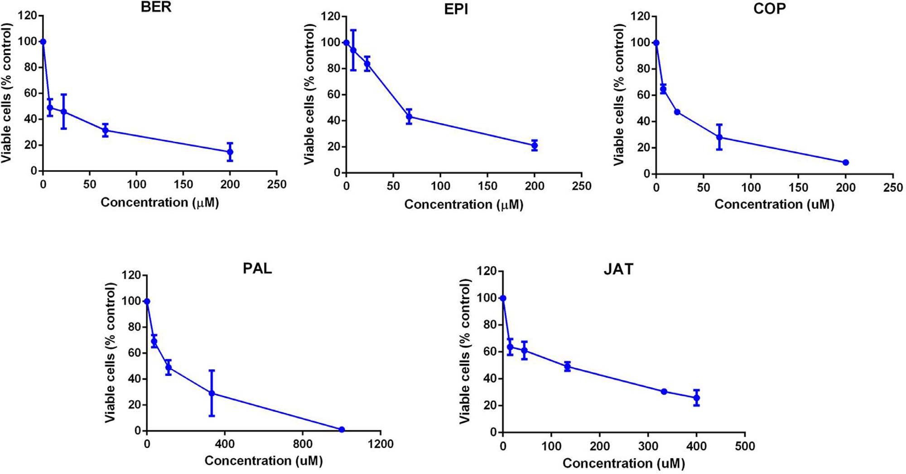
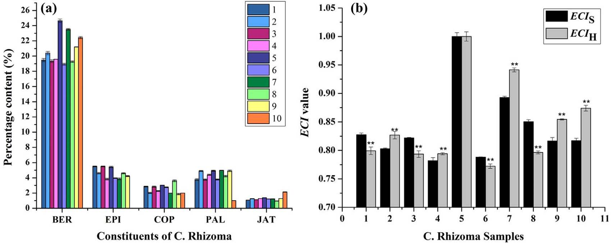
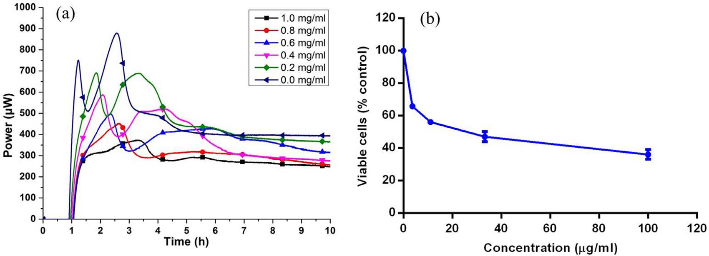
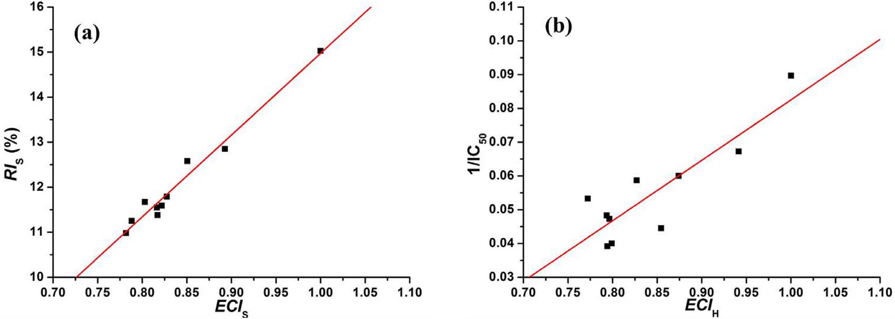
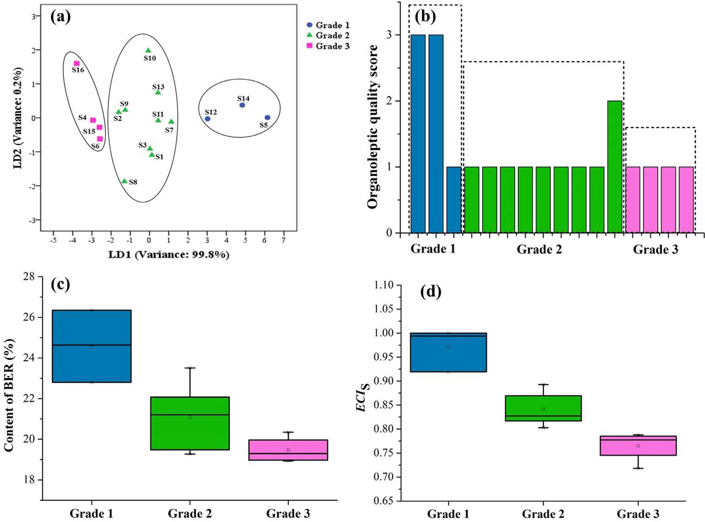
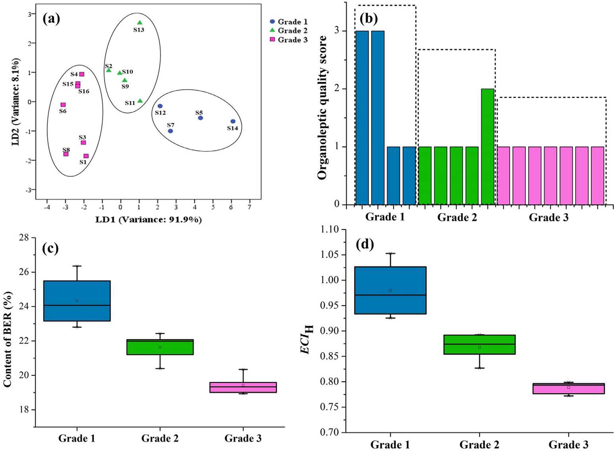
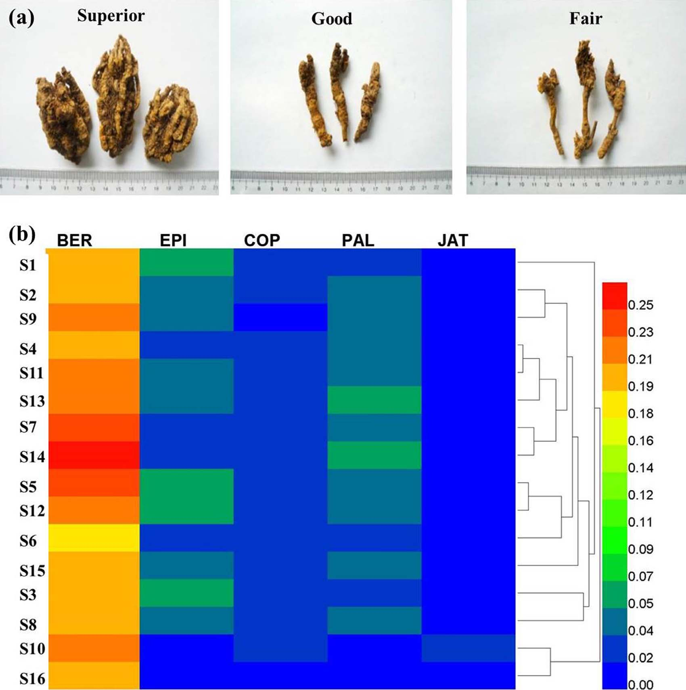

効果-成分指数（ECI）という統合的・薬効指向のQ-markerによる生薬の品質規格の高度化 — 黄連（Coptidis Rhizoma）を例として

<!-- 方針: ほぼ全訳＋必要に応じた補足。原文構成に沿って訳出。「> 補足:」は訳者注。 -->
書誌情報
- 原題: Promotion of quality standard of Chinese herbal medicine by the integrated and efficacy-oriented quality marker of Effect-constituent Index
- 著者: Yin Xiong（熊 銀・責任著者）, Yupiao Hu, Fan Li, Lijuan Chen, Qin Dong, Jiabo Wang, Elizabeth A. Gullen, Yung-Chi Cheng, Xiaohe Xiao（肖 小河・責任著者）
- 所属: 昆明理工大学 生命科学技術学院（中国雲南省昆明）／北京中医薬大学 中薬学院（中国北京）／中国人民解放軍第302医院 中国軍事医学中薬研究所（中国北京）／米国イェール大学医学部 薬理学教室（コネチカット州ニューヘイブン）
- 掲載: Phytomedicine 45 (2018) 26–35. https://doi.org/10.1016/j.phymed.2018.03.013
- インパクトファクター: 7.9（Phytomedicine, JCR 2024 / Clarivate, Q1。植物療法・薬用植物分野の代表的国際誌）
補足: IF は情報源により 2024 年版で 7.9〜8.8 と幅があり、上記は要確認。2025 年citation ベースの最新値（2026 年公表）では 11.3 との報告もある。
- 受領 2017-07-23 / 改訂受領 2018-01-10 / 採録 2018-03-07
- 資金: 中国国家自然科学基金（81660661・81274026）、昆明理工大学（KKSY201526065）、雲南省応用基礎研究重点プロジェクト（2016FD040）
- 利益相反: 著者らは申告すべき利益相反なしと表明
補足: 黄連（Coptidis Rhizoma, C. Rhizoma）は、キンポウゲ科の Coptis chinensis Franch.（オウレン）・Coptis deltoidea C. Y. Cheng et Hsiao・Coptis teeta Wall. の乾燥根茎で、細菌性下痢・便秘・嘔吐・がん・その他の感染性/炎症性疾患に数千年にわたり用いられてきた清熱解毒薬。主要活性成分はプロトベルベリン系アルカロイドで、本論文は略号として BER（ベルベリン）・EPI（エピベルベリン）・COP（コプチシン）・PAL（パルマチン）・JAT（ヤトロリジン／jatrorrhizine） を用いる。
要旨（Abstract）
背景: 現在、生薬（Chinese herbal medicine, CHM）の品質管理には複数の成分がマーカーとして用いられている。しかし、それらの成分は互いに切り離されて扱われ、CHM の生物学的効果（bioeffect）に対する寄与の違いを示せていない。加えて、異なる臨床用途に用いられる CHM が同一の品質マーカー（Q-marker）で管理されることが多く、その多様な薬効を区別して相関づけられない。
目的: 本研究は、効果-成分指数（Effect-constituent Index, ECI）という統合的・薬効指向の Q-marker によって CHM の品質規格を高度化することを目指す。
方法: 黄連（C. Rhizoma）をケーススタディとして、生物効果と活性成分を統合した ECI という Q-marker を開発した。黄連の薬効に基づき、その抗菌作用と抗腫瘍作用をそれぞれ微量熱測定（microcalorimetry）と MTT アッセイで調べた。黄連エキス中の活性成分は高速液体クロマトグラフィー（HPLC）で同時定量した。赤痢菌（Shigella dysenteriae, S. dysenteriae）に対する阻害の ECIS と、HepG2 細胞に対する阻害の ECIH を、多指標総合評価法（multi-indicator synthetic evaluation, MSE）で確立した。黄連試料の官能評価スコアはデルファイ法で付与した。
結果: 相関分析により、ECIS と ECIH はそれぞれ黄連エキスの赤痢菌増殖阻害効果（P < 0.01）と HepG2 細胞増殖阻害効果（P < 0.01）と有意に相関した。さらに ECI は、生物効果に基づく品質等級を良好に判別・予測できたのに対し、官能評価と化学分析はそれを達成できなかった。加えて、ECIS が低い試料の一部が ECIH は高く、その逆もみられた。
結論: ECI という Q-marker は、複数の活性成分を含む黄連の異なる薬理作用を関連づけるのに有用であり、CHM の品質規格を統合的・簡便・差別化された形で改善するうえで有益である。
序論（Introduction）
生薬（CHM）は世界の研究コミュニティで大きな関心を集めており、その品質は治療効果と安全性において重要な役割を果たす。臨床で用いられる CHM の治療効果（efficacy）は一般に、その品質を最もよく表す指標と考えられている。数ある品質管理（QC）・評価法のうち、化学分析は実施の容易さから、CHM の真正性の確認、品質評価、種の判別に現在広く用いられている。しかし、CHM の QC のために一部の成分を定量しても、臨床効果と相関しないことがしばしばある。例えば、自然界に広く存在するプリンヌクレオシドであるアデノシンは、中国薬典（2015 年版）で冬虫夏草の QC マーカーとされているが、この生薬の機能（腎保護・止血・去痰）との相関は乏しい。近年、Liu ら（2017）は CHM の品質評価と工程管理のための「品質マーカー（Q-marker）」という新概念を提唱し、Q-marker とは CHM の薬理作用に関連した化学成分であると明確に定義した。この目的を達成するために、活性成分が未知または定量不能な CHM の Q-marker 決定や品質評価には、生物学的アッセイを用いることができる（U.S. FDA, 2015）。
薬理学的な実体が比較的明確な CHM では、複数の活性成分を Q-marker とする方が、単一の活性成分よりも CHM の薬効を包括的に反映できる。しかしながら、複数成分の薬理効果への「寄与の違い」はこれまで考慮されてこなかった。どの活性成分が治療で主導的役割を果たすのかが明らかでない。例えば中国薬典（2015 年版）では、ベルベリン（BER）・エピベルベリン（EPI）・コプチシン（COP）・パルマチン（PAL）の含量を測定して黄連（C. Rhizoma）の品質を管理・評価している。ある黄連試料が別の試料より EPI は高いが COP は低い場合、これらはどちらもこの CHM の Q-marker であるため、2 試料の品質差をどう評価すればよいのか。加えて、CHM は一般に複数の薬効のために用いられるので、ある薬効をもつ CHM が他の薬効でも同じ役割を果たすとは限らない。
多指標総合評価法（MSE）は、対象の特徴に関連する複数の因子・指標の統計解析に基づいて対象を総合的に評価する手法で、経済・生態・政治・医学など様々な分野で広く応用されてきた。臨床効果と関連づけ、CHM 中の活性成分の寄与の違いを扱うために、私たちは MSE を用いて、化学分析と生物効果検出の結果の統合に基づく新しい品質評価法「効果-成分指数（Effect-constituent Index, ECI）」を確立した。ECI は、相対活性に応じて効果の重みを与えられた活性成分の含量測定によって決定できる。
黄連（C. Rhizoma）は、Coptis chinensis Franch.・Coptis deltoidea C. Y. Cheng et Hsiao・Coptis teeta Wall.（キンポウゲ科）の乾燥根茎であり、細菌性下痢・便秘・嘔吐・がん・その他の感染性/炎症性疾患の治療に数千年にわたり広く用いられてきた生薬である。これまで黄連の品質評価には、形態学的・顕微鏡的特徴の調査、化学成分やクロマトグラフィープロファイルの分析、生物学的アッセイなど、単独または組み合わせた各種手法が適用されてきた。研究者らは黄連が多様な薬理特性をもつことを示している。様々な成分のうち、プロトベルベリン系アルカロイドが良好な薬理効果をもつ主要な活性成分とされる。例えば BER は黄連の重要かつ活性な成分で、腸管感染症の治療に認められ、近年ではがんの治療にも検討されている。他の活性成分である EPI・COP・PAL・ヤトロリジン（JAT）も、抗菌・抗腫瘍・弛緩作用などの薬理効果を示すと報告されている。したがって、生物活性物質基盤が比較的明確で、臨床効果に関連する特異的な生物効果をもつ CHM として黄連を本研究の対象に選び、本法の動作と性能を示すことにした。異なるニーズに応えるため、黄連の抗菌・抗腫瘍作用に基づいて、赤痢菌（S. dysenteriae）増殖阻害の ECIS と HepG2 細胞阻害の ECIH という統合的・薬効指向の Q-marker を確立し、それを異なるバッチの黄連の個別品質評価に適用することを試みた。
理論（Theory）
CHM 中の各成分の生物効果と成分レベル（含量）を測定したと仮定する。CHM の予測される生物効果と活性成分のデータとの関係を表すモデルは、次式で決定できる：
$$\mathrm{ECI}_j = \sqrt{\sum_{i=1}^{n}(W_i \times X_i)^2_{\text{sample}} \Big/ \sum_{i=1}^{n}(W_i \times X_i)^2_{\text{reference}}} \quad (1)$$
ここで ECIj は CHM の予測される生物効果 j、Wi は成分 i の生物効果に対する重み係数、Xi は CHM 中の成分 i のレベル（含量）である。一般に、比較的強い活性と高い成分レベルをもつ CHM 試料を基準試料（reference sample）として選ぶ。式(1) は ECI の形式的表現、すなわち各活性成分のレベルと効果を CHM の対応する生物効果に結びつける数学モデルである。成分の生物効果に対する重み係数は相対値なので、式(1) を解くには Wi を次式で計算しなければならない：
$$W_i = A_i \Big/ \sqrt{\sum_{i=1}^{n} A_i^2} \quad (2)$$
式(2) で Ai は成分 i の測定された効果である。全成分の効果値の総和に対する各成分の効果値が、その成分の生物効果に対する重み係数となる。Wi が大きいほど、その成分が CHM の生物効果に強い（予測的）相関をもつことを意味する。
生物効果に対する重み係数を活性成分のレベルに掛け合わせることで、その成分の CHM の対応する生物効果への相対寄与が明らかになる。したがって、活性寄与を分配した活性成分のレベルを測定することで、CHM の予測される生物効果が得られる。
補足: ECI の考え方は「含量 × その成分の効きやすさ（活性）」を全成分で合算し、活性の高い基準試料を 1.0 とした相対値で表すもの。単に成分量を測るだけの従来法と違い、「量は多いが弱い成分」より「量は少なくても強い成分」を重視できる点が肝。後述のように、重み Wi は活性値（抗菌なら 1/IC50、抗腫瘍なら 1/EC50）を規格化して与えられる。
材料と方法（Materials and Methods）
実験材料
黄連試料は、中国の四川省・重慶市・湖北省・雲南省の GAP（Good Agricultural Practices）拠点から入手し、研究者（Xiaohe Xiao, 中国軍事医学中薬研究所, 第302医院, 北京）が鑑定した。証拠標本（番号 20120023）を軍事医学中薬研究所の実験室に保管した。BER と PAL の化学標準品は中国薬品生物製品検定所（NICPP, 北京）から、EPI・COP・JAT は成都曼斯特生物科技（Chengdu Must Biotechnology, 成都）から購入した。上記標準品の純度はいずれも 98% 以上。
黄連エキスの調製
黄連エキスは既報（Yan et al., 2014）の方法に従って調製した。
抗菌活性アッセイ
抗菌活性実験は既報（Yan et al., 2014）の方法に従って行った。試料には黄連エキスと、異なる濃度のアルカロイド溶液を含めた。
細胞培養
HepG2 細胞はイェール大学医学部（米国コネチカット州ニューヘイブン）から入手した。細胞は、10% ウシ胎児血清と 0.1 mg/ml カナマイシンを含むダルベッコ改変イーグル培地（DMEM）中で、5% CO₂・37 ℃ の飽和加湿雰囲気で培養した。良好な増殖状態の細胞は、リン酸緩衝生理食塩水に溶かした 2 g/l パンクレアチンで消化・継代した。
MTT アッセイ
コンフルエントに達した細胞を 2 g/l パンクレアチンで懸濁し、96 ウェル組織培養プレートに 5000 細胞/ウェルで播種した（一部のウェルはブランクとして空欄）。12 時間後に培地を除去し、異なるエキスまたはアルカロイドを含む 10% ウシ胎児血清入り DMEM を各ウェルに加えた（ブランクウェルには同量の DMEM）。72 時間後、20 µl の MTT 試薬（培地中 5 mg/ml）を各ウェルに加えた。4 時間後、上清を捨てて細胞を再度洗浄した。色素は 150 µl のジメチルスルホキシドで抽出し、シェイカーで溶解させた。15 分後、マイクロプレートリーダーで 490 nm の吸光度を記録した。アッセイは 3 連で行った。
高速液体クロマトグラフィー（HPLC）分析
クロマトグラフィー分析は、Kromasil 100-8 C18 カラム（250 mm × 4.6 mm, 5 µm）（AkzoNobel, スウェーデン）を備えた Agilent 1100 シリーズ HPLC システム（Agilent Technologies, 米国 Santa Clara）で行った。移動相は、ラウリル硫酸ナトリウム 3 g/l を含むアセトニトリル（A）と、リン酸二水素カリウム 6.0 g/l を含む超純水（pH 6.0）（B）からなり、A:B = 66:34（v/v）を基本とした。グラジエントモードは次のとおり：
| 時間（min） | 移動相 B の比率 |
|---|---|
| 0 | 38% |
| 55 | 38% |
| 65 | 15% |
| 70 | 0% |
カラム温度 30 ℃、流速 1.0 ml/min、検出波長 345 nm、試料注入量 10 µl とした（Xiong, 2015）。
黄連エキス 50 mg を塩酸-メタノール溶液（1:100, v/v）50 ml に溶解し、60 ℃ の水浴で 15 分間加熱した。20 分間の超音波処理後、0.45 µm メンブレンフィルターでろ過してから HPLC 分析に供した。混合標準溶液は、塩酸-メタノール（1:100, v/v）中に BER 0.43・EPI 0.11・COP 0.06・PAL 0.12・JAT 0.07（いずれも mg/ml） を含んだ。5 成分の化学構造は Fig. 1 に、黄連エキスの HPLC 指紋は Fig. S1（原文の補足資料）に示した。

補足: HPLC 指紋（Fig. S1）は本体 PDF には収録されておらず補足資料（オンライン版）にある。原文参照。
デルファイ法に基づく官能（外観）評価
評価法は既報（Wang et al., 2010a, b）に基づいて開発した。質問票は『76 種中国薬材の規格・等級標準』（中国国家中医薬管理局, 1984）を参照して作成した。黄連の官能評価に平均 31 年携わる 13 名の専門家を招き、2 回にわたって黄連の品質を評価してもらった。黄連への習熟度と判定基準に関する質問票（Table S1）で、これら 13 名の専門性を調査した。黄連に相応に習熟し、判定基準が実務経験に基づく専門家を「強い権威（strong authorities）」とみなした。各専門家の 2 回の評価の一致度と、専門家間の試料等級評価の一致度をそれぞれ式(S1)・式(S2) で算出した。就労年数が比較的少なく権威が弱く、2 回の評価の一致度が 70% 以下だった 4 名（Table S2）は最終結果から除外した。残る 9 名の専門家の間で最も一致度が高かったスコアを、各バッチの黄連の判別結果とした。官能評価スコア 3・2・1 はそれぞれ黄連の「優（superior）」「良（good）」「可（fair）」の品質を表す。
統計解析
定量的な熱力学的パラメータは Origin 8.5（OriginLab, 米国 Northampton）で解析し、HFP-t 曲線の描画と熱力学的パラメータの算出を行った。IC50 と EC50 の値も Origin 8.5 でプロビット回帰によりフィッティングした。主成分分析（PCA）、線形判別分析（LDA）、ECI 値と測定生物効果値の相関分析は SPSS v20.0（IBM, 米国 Armonk）で行った。結果は平均 ± SD で示し、統計比較はすべて一元配置分散分析（one-way ANOVA）に続くダンカン検定で行った。P < 0.05 を有意とした。
結果と考察（Results and Discussion）
抗菌活性
黄連は古くから臨床で赤痢性下痢の治療に用いられてきた。多くの病原体のうち、赤痢菌（S. dysenteriae）は、頻回の粘血便・腹部けいれん・裏急後重（テネスムス）を伴う急性赤痢性下痢を引き起こす主要な細菌とされる。したがって、赤痢菌に対する阻害はこうした疾患の治療に有効な方法であり、黄連の薬効評価にも適したモデルである。
生物の増殖・代謝の過程で熱（エネルギー）が生じ、その変化を各種薬物による指標として活性評価に利用できる。微量熱測定（microcalorimetry）は、様々な種類の試料中の細菌活性・増殖をモニターする汎用的・定量的な分析技術で、異なる微生物に対する薬物の薬理効果の解析に広く用いられてきた。そこで、黄連および各成分の抗菌活性を微量熱測定で測定した。
37 ℃ における赤痢菌の正常な増殖発熱曲線を Fig. 2 に示す。「熱流パワー-時間（HFP-t）曲線は、赤痢菌の代謝プロファイルが 2 つの主要ステージ（stage 1・2）と 5 つのフェーズ（誘導期 [A-B]、第一指数増殖期 [B-C]、遷移期 [C-D]、第二指数増殖期 [D-E]、衰退期 [E-F]）からなることを示した。赤痢菌増殖の HFP-t 曲線の定量的熱力学パラメータは式(3) で表せる：
$$\ln P_t = \ln P_0 + kt \quad (3)$$
ここで P₀ と Pt はそれぞれ時刻 0 または時刻 t（min）における熱流パワーである。微量熱測定の信頼性を確かめるため、未処理の細菌で 8 回実験を繰り返し、良好な再現性を得た。次に、異なる濃度の試料存在下での HFP-t 曲線から以下の熱力学パラメータを定量した」（Yan et al., 2014）：第一・第二指数期の増殖速度定数（k1・k2）、第一・第二の最高ピークの HFP（p1・p2）、第一・第二の最高ピークの出現時刻（t1・t2）、および曲線下ピーク面積、すなわち赤痢菌の総発熱量（Qt）（Table S3）。PCA により、t2 と Qt が最大の負荷（loading）変数であることが分かった。対照群と比べ、t2 値が高く Qt 値が低いほど赤痢菌への阻害が強い。Fig. 2 のとおり、試料濃度の増加に伴って HFP-t 曲線の t2 が遅延し、これが成分の抗菌活性を評価する指標となりうる。

次に、各成分の静菌活性を定量するため、式(4) で阻害率 IS と IC50 値を算出した。その結果、BER・EPI・COP・PAL・JAT の IC50 値は（mg/ml で）それぞれ 0.166・0.485・0.101・31.981・5.049 であった。これは阻害活性の順位が COP > BER > EPI > JAT > PAL であることを示し、BER の主導的効果を過大評価し、他成分の寄与を見落とすべきでないことを気づかせる。
$$I_S = (t_2 - t_0)/t_0 \times 100\% \quad (4)$$
ここで t0 は培地のみの赤痢菌の HFP-t 曲線の第二最高ピーク出現時刻、t2 は被験試料に曝露した赤痢菌の HFP-t 曲線の第二最高ピーク出現時刻、IS は試料の赤痢菌への阻害率である。
MTT アッセイ
伝統中医学の理論では、蓄積した熱から変じた「毒」が腫瘍やがんを引き起こす主要な病因の一つとされる。したがって清熱解毒の治療は腫瘍/がんの予防・治療に有効な療法である。清熱解毒機能をもつ代表的生薬として、黄連とその化合物は腫瘍/がんの予防・治療、あるいはがん治療中の副作用の軽減に用いられてきた。治療に関連する機序は、腫瘍細胞増殖の直接的阻害と、がんを誘導する関連がん遺伝子・転写因子の発現の阻害に相関する。黄連とその成分は肝がん・子宮頸がん・上咽頭がん・肺がんなどに強い抗腫瘍効果をもつと報告され、なかでも肝がん治療における活性・機序の報告が多い。そこで、黄連の薬効を調べるために古典的な肝がんモデルである HepG2 細胞を選んだ。
各成分の生存細胞率（% 対照）を式(5) で算出した：
$$\text{Viable cells (\% control)} = (A_{\text{sample}} - A_{\text{blank}})/(A_{\text{control}} - A_{\text{blank}}) \times 100\% \quad (5)$$
ここで A は溶液の吸光度である。BER・EPI・COP・PAL・JAT の異なる濃度が HepG2 細胞に誘導する細胞毒性を Fig. 3 に示す。生存細胞数と黄連中アルカロイドの濃度の間には負の相関があった。BER・EPI・COP・PAL・JAT の EC50 値は（μM で）それぞれ 6.60・67.30・25.52・64.21・76.32 であり、BER が最も強い細胞毒性を、JAT が最も弱い効果を示した。黄連アルカロイドの赤痢菌増殖への効果と比べると、そちらでは COP が最強、PAL が最弱の効果を示した。

結果によれば、5 成分は同じ生物効果を引き起こすうえで有意に異なる程度の寄与をした。例えば、赤痢菌阻害の IC50 値でみると BER の抗菌活性は PAL の約 200 倍強かった。非マーカー成分である JAT も PAL より強い阻害効果を示した。これらの観察は、複数成分を Q-marker とする場合、CHM の品質評価に各成分の相対活性の寄与を考慮すべきことを気づかせる。また、赤痢菌への阻害順位は COP > BER > EPI > JAT > PAL であったのに対し、MTT アッセイでは BER・EPI・COP・PAL の 4 成分が JAT より相対的に強い効果を示した。これらの観察は、黄連の Q-marker が臨床で用いられる薬効ごとに方向づけられるべきことを示唆する。たとえるなら、物差しは長さを測るのに使えるが重さを量るのには使えないのと同じである。
補足: 同じ成分でも「どの薬効を測るか」で強さの順位が変わる、というのが本節の核心。抗菌ではコプチシン(COP)が最強・パルマチン(PAL)が最弱だが、抗腫瘍ではベルベリン(BER)が最強。単位が抗菌は mg/ml（IC50）、抗腫瘍は μM（EC50）と異なる点に注意（原文どおり）。この「用途で順位が入れ替わる」事実が、次節の薬効別 ECI（ECIS と ECIH）を分ける根拠になっている。
ECIS と ECIH の確立
各成分への効果重みは、1/IC50i または 1/EC50i を規格化して式(6)・(7) で割り当てた：
$$W_i = \frac{1/\mathrm{IC}_{50i}}{\sqrt{\sum_{i=1}^{n}(1/\mathrm{IC}_{50i})^2}} \quad (6)$$
$$W_i = \frac{1/\mathrm{EC}_{50i}}{\sqrt{\sum_{i=1}^{n}(1/\mathrm{EC}_{50i})^2}} \quad (7)$$
ここで Wi は各成分の生物効果に対する重み係数、IC50i と EC50i はそれぞれ成分 i の IC50・EC50 である。n は成分数。本研究の成分は BER・EPI・COP・PAL・JAT。比較的強い活性と高い成分レベルをもつ黄連を基準試料に選び、本研究では 試料 5（sample 5） を基準試料とした。各成分の IC50・EC50 値を上式に入力し、黄連の抗菌活性・抗腫瘍活性の ECI モデルをそれぞれ式(8)・(9) で得た：
$$\mathrm{ECI}_S = 3.1676 X_{\mathrm{BER}} + 1.0842 X_{\mathrm{EPI}} + 5.2062 X_{\mathrm{COP}} + 0.0164 X_{\mathrm{PAL}} + 0.1041 X_{\mathrm{JAT}} \quad (8)$$
$$\mathrm{ECI}_H = 3.7617 X_{\mathrm{BER}} + 0.3689 X_{\mathrm{EPI}} + 0.9729 X_{\mathrm{COP}} + 0.3867 X_{\mathrm{PAL}} + 0.3253 X_{\mathrm{JAT}} \quad (9)$$
上式で ECIS と ECIH はそれぞれ赤痢菌への予測阻害効果と HepG2 細胞への予測細胞毒性を表す。XBER・XEPI・XCOP・XPAL・XJAT はそれぞれ黄連中の BER・EPI・COP・PAL・JAT のレベル（含量）である。重み係数によれば、抗菌では COP が他成分より最強の阻害効果を示し、抗腫瘍（細胞毒性）では BER が相対的に強かった。
補足: 式(8)（抗菌 ECIS）では COP の係数 5.2062 が最大＝抗菌には COP の寄与が最重要。一方、式(9)（抗腫瘍 ECIH）では BER の係数 3.7617 が最大＝抗腫瘍には BER が最重要。同じ 5 成分でも「用途に応じて重みの配分が全く変わる」ことを、係数の並びが端的に示している。パルマチン(PAL)は抗菌係数 0.0164 とほぼゼロで、抗菌 QC としては量を測っても意味が薄い。
黄連のアルカロイド含量・ECIS・ECIH の決定
Fig. 4a のとおり、黄連エキス 10 バッチ中の 5 成分の含量はバッチごとにばらつき、異なる試料の品質評価を難しくしていた。例えば、試料 1 は試料 2 より EPI と COP の含量が高いが、BER・PAL・JAT の含量は試料 1 のほうが低かった。5 指標を同時に見て、どちらの試料の品質が優れているか判断するのは困難だった。
この問題を解くため、各バッチの黄連の BER・EPI・COP・PAL・JAT 含量を式(8)・(9) に代入して各試料の ECIS・ECIH を算出した。Fig. 4b の結果によれば、ECI という単一指標によって黄連の品質差をバッチごとに容易に判別できた。例えば、赤痢菌による赤痢の治療に用いる場合、ECIS でみると試料 4 は劣り、試料 5 は優れていた。同時に、ECI の確立は黄連の個別化評価と合理的な使用も導きうる。例えば試料 7 は、その ECI 値によれば赤痢菌阻害より HepG2 細胞阻害に適していた。

補足: Fig. 4a から、最も含量の高い BER でもバッチ間で約 18.9〜24.6% と幅があり、EPI・COP・PAL・JAT はいずれも数%以下。基準試料である試料 5 の ECIS・ECIH がともに 1.00 で、他バッチは相対値として表される。試料 5 が抗菌・抗腫瘍とも最良である一方、試料 7 のように「抗腫瘍(ECIH)は高いが抗菌(ECIS)はそれほどでない」バッチがあり、用途に応じた選別ができることを示す（Fig. 4a の実数はグラフ読み取りのため近似）。
相関分析
ECI が黄連の効果を表せるかを確かめるため、黄連エキスの赤痢菌増殖阻害（Fig. 5a）と HepG2 細胞への細胞毒性（Fig. 5b）を、それぞれ微量熱測定と MTT アッセイで調べた。黄連エキスの濃度が高いほど阻害効果は強かった（Fig. 5）。異なるバッチの黄連について、赤痢菌への相対阻害率（RI, 式(10)）と HepG2 細胞への EC50 値を求めた。
$$\mathrm{RI}_S = I_S / I_{\text{control}} \times 100\% \quad (10)$$
ここで RIS は黄連試料の赤痢菌への相対阻害率、IS は黄連試料の阻害率、Icontrol は陽性対照薬 BER の阻害率である。測定効果値を ECI の予測値と比較したところ、ECIS・ECIH が最も高い試料 5 が、赤痢菌への阻害と HepG2 細胞への細胞毒性も最も強かった（それぞれ RIS 15.03%、EC50 11.14 mg/ml）。さらに ECI と阻害効果値の相関分析を行った。その結果（Fig. 6）、黄連試料の ECIS は RIS と有意に相関し（RS = 0.987, P < 0.01）（Fig. 6a）、ECIH は 1/EC50 と有意に相関した（RH = 0.873, P < 0.01）（Fig. 6b）。これは、ECIS と ECIH がそれぞれ黄連の赤痢菌・HepG2 細胞への阻害効果をある程度表せることを示唆する。


黄連の ECI と従来型品質評価法の比較
官能（外観）評価と化学分析は、現在 CHM の同定・品質評価に用いられている。熟練した実務者は、色を観察し、匂いを嗅ぎ、味を確かめ、質感を触ることで CHM の品質を判別する。黄連の品質評価に対する ECI の有用性を検証するため、異なるバッチの代表的な 16 試料を分析した（Table S4）。マーカー成分のレベル、デルファイ法で決定した官能評価スコア（Table S4）、上記モデルで算出した ECIS・ECIH の値を Fig. 7・8 に示す。
デルファイ法により、黄連の試料 5 と 14 は形態が優（スコア 3）、試料 2 は良（スコア 2）とされ、残りの試料は「可」の属性でスコア 1 が与えられた。3 ランクの典型試料を Fig. 9a に示す。根茎が太く、ひげ根が少なく、破断面が黄金色の黄連が形態的に最上とされた。また、5 活性成分の含量に基づいてクラスター分析で黄連試料を分類した（Fig. 9b）。化学分析により、同一起源（Coptis teeta Wall.）の試料 10・16 は、Coptis chinensis Franch. 起源の他試料と区別できた。しかし、これらの指標は互いに切り離されているため、どの試料が効果に優れるか、活性成分レベルが高いかを判別するのは困難だった。
黄連試料の評価結果の正確性をさらに評価するため、実際の生物効果結果を基準として各手法の一致性を比較した。異なる起源・産地の試料を分類するために LDA を行った。抗菌効果と HepG2 細胞への細胞毒性に基づく散布図をそれぞれ Fig. 7a・8a に示す。図には重なり合うクラスターは全く見られなかった。抗菌活性については、異なるバッチの試料が 3 等級に分類された：グレード 1（S5・S12・S14）、グレード 2（S1–4・S7–11・S13）、グレード 3（S4・S6・S15–16）（Fig. 7b）。HepG2 細胞への阻害効果については、黄連試料が 3 等級に分類された：グレード 1（S5・S7・S12・S14）、グレード 2（S2・S9–11・S13）、グレード 3（S1・S3–4・S6・S8・S15–16）（Fig. 8b）。一方の活性が低い試料の一部が、もう一方の効果では高い値を示した。結果によれば、官能評価スコアは生物効果に基づく品質等級を完全には区別できず、黄連の外観が劣っていても必ずしも薬効が弱いとは限らないことが示唆された。また、黄連のマーカー成分である BER の含量も、抗菌効果に基づく品質等級を判別できなかった（Fig. 7c・8c）。
補足: 原文では抗菌グレードの記載でグレード 2 とグレード 3 の双方に「S4」が現れており（グレード 2 に S1–4、グレード 3 に S4・S6・S15–16）、少なくとも一方は誤記と考えられる（原文ママ）。HepG2 の等級分類でも 16 試料中一部（S15–16 は挙がるが S12・S14 はグレード 1 のみ、など）で全試料の帰属が一意に読み取りにくい。Table S4 や Fig. 7・8 の詳細は補足資料側にあり、本体からは正確な帰属の全数確認ができない箇所は原文参照。


補足: Fig. 8 の (d) は原文キャプションでは「ECIS」と表記されているが、抗腫瘍効果ベースの等級に対応させる文脈からは ECIH の誤記の可能性がある（原文ママ）。
これに対し、黄連の 3 等級すべてが、ECIS（Fig. 7d）と ECIH（Fig. 8d）の両方によって有意に分離できた。

本研究は、黄連の品質を形態的特徴のみ、あるいは単一マーカー成分や切り離された数成分のレベルのみで判断することはできず、そのためには効果が統合された一部となるべきことを示す。生薬中の活性成分の含量測定と生物効果試験を重み付け解析した手法として、ECI という Q-marker は、品質を黄連の潜在的な臨床効果と関連づけるのに有用である。本研究では黄連の 2 つの生物効果のみを調べた。この生薬の他の薬効に関わる試験や in vivo での薬理学的検証は、今後の研究で行う。
結論（Conclusion）
未分化な（用途を区別しない）品質規格では、異なる臨床用途に応じた CHM の品質を反映するのは難しく、また、マーカーが互いに切り離されていると、異なる Q-marker によって評価結果が食い違うことがあるため実務での使用を妨げる。臨床効果に関連する化学的・生物学的情報の統合に基づく ECI という Q-marker は、効果の異なる用途に応じた黄連品質の個別評価を可能にし、品質規格を両面的（two-sided）に高度化できる。ECI という Q-marker を用いれば、生物効果指標を追加せずとも、活性成分のレベルを検出するだけで黄連の効果を決定できる。したがって ECI は、黄連の従来型・現代的評価法に対する有益な補完となりうる。本研究は、臨床効果に対応する比較的明確な効果と活性成分をもつ他の CHM の品質評価の基盤を築くものである。
訳者補足（本稿の位置づけ）
- 一言でいうと: 従来の多成分定量は「量」だけを見て各成分を並列に扱うが、本論文は各成分の「効きやすさ（活性）」で重み付けした合成指標 ECI（効果-成分指数） を作り、これを薬効指向の Q-marker とした。しかも抗菌用（ECIS）と抗腫瘍用（ECIH）で重みを変え、同じ生薬でも用途別に品質を評価できるようにした点が新しい。
- 手法の骨格: 化学（HPLC で 5 アルカロイド同時定量）×生物（微量熱測定で IC50、MTT で EC50）×統計（MSE で重み付け・合成、LDA/相関分析で検証）の三位一体。活性の逆数（1/IC50・1/EC50）を規格化して重みにするのがミソ。
- 示された事実の要点: 抗菌活性順位 COP>BER>EPI>JAT>PAL、抗腫瘍では BER 最強・JAT 最弱。BER 偏重・非マーカー成分（JAT）の寄与見落としの危険を数値で提示。官能評価もベルベリン含量も薬効ベースの等級を区別できなかったが、ECIS・ECIH は 3 等級を有意に分離（ECIS-RIS 相関 R=0.987、ECIH-1/EC50 相関 R=0.873、いずれも P<0.01）。
- 限界（原文の明記）: 調べた薬効は抗菌・抗腫瘍の 2 つのみで in vivo 検証は未実施。含量図（Fig. 4a）や試料等級の全数、HPLC 指紋（Fig. S1）、Table S1〜S4 は補足資料側にあり、本体 PDF からは一部が正確に確認できない（該当箇所は「原文参照」と明記した）。
- 他の解説との関係: 本ワークスペースには同じ「効果-成分指数（IEQFM/ECI）」を複方甘草片に応用した別論文の解説（
clt-fingerprint-ieqfm-fusion）や、Q-marker 概念の総説（qmarker-new-concept-liu2017ほか）がある。本稿はその ECI 手法の原型に近い、単一生薬（黄連）×2 薬効での実証例として読むと位置づけが分かりやすい。